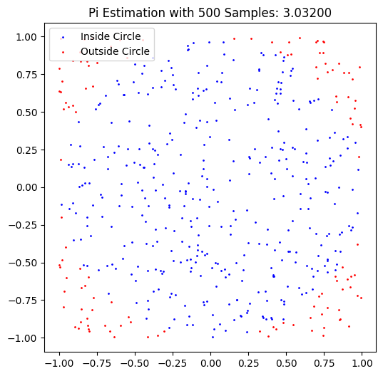

Estimating Pi using Monte Carlo Methods
Introduction
Monte Carlo methods are a class of computational algorithms that rely on repeated random sampling to estimate numerical results. One of the classic applications of Monte Carlo methods is estimating the value of \(\pi\) through geometric probability. In this document, we explore two such approaches:
- Using the ratio of points inside a unit circle to the total points in a square.
- Buffon's Needle experiment, which estimates \(\pi\) based on the probability of a needle crossing parallel lines.
Part 1: Estimating \(\pi\) Using a Circle
Theoretical Foundation
The idea behind this method is simple: if we randomly distribute points within a square of side length 2, the proportion of points that fall inside an inscribed circle should approximate the ratio of their areas.
For a unit circle (\(r=1\)) inscribed in a square of side length 2:
- The area of the circle is: $ A_{circle} = \pi r^2 = \pi$.
- The area of the square is: $ A_{square} = 4$.
Since points are randomly distributed in the square, the probability of a point falling inside the circle is proportional to the ratio of their areas:
Solving for \(\pi\):
Simulation
We generate random points \((x, y)\) inside the square \([-1,1] \times [-1,1]\) and count how many fall inside the unit circle (\(x^2 + y^2 \leq 1\)). The ratio of these counts gives our estimate for \(\pi\).
Visualization
A scatter plot will show points inside the circle in one color and those outside in another, helping us visualize the method.
Python Code
Part 2: Estimating \(\pi\) Using Buffon's Needle
Theoretical Foundation
Buffon's Needle experiment estimates \(\pi\) based on the probability of a randomly dropped needle crossing parallel lines. Given:
- Needle length \(l\).
- Distance between parallel lines \(d\) (where \(l \leq d\)).
The probability of a needle crossing a line is given by:
where:
- \(N\) = total number of needle drops,
- \(X\) = number of crossings.
Simulation
We simulate randomly dropping needles onto a plane with parallel lines and count how often they cross a line.
Visualization
A graphical representation will show needle positions, highlighting crossings.
Python Code

Analysis
Convergence
Both methods improve in accuracy as the number of samples increases. We compare their convergence using graphs:




Comparison
| Method | Accuracy | Computational Complexity |
|---|---|---|
| Circle-Based | High with large samples | Low complexity, fast |
| Buffon's Needle | Lower, slower convergence | More computationally expensive |
Conclusion
- The circle-based Monte Carlo method is more efficient and converges faster.
- Buffon's Needle provides an interesting probabilistic approach but requires more samples for accuracy.
- Both methods demonstrate the power of Monte Carlo simulations in numerical estimation.
This study highlights how randomness can be harnessed to solve complex problems in probability, physics, and computational mathematics.